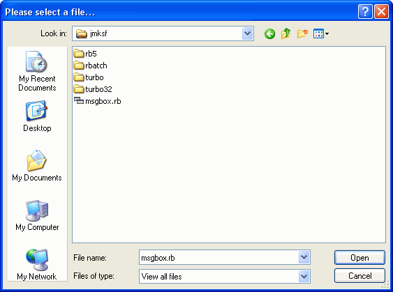

OPENBOX, SAVEBOX
OPENBOX, SAVEBOX
OPENBOX, SAVEBOX
OPENBOX, SAVEBOX
| Syntax: | OPENBOX file = dialog-title, filter SAVEBOX file = dialog-title, filter |
| Description: | OPENBOX provides a standard dialog to open a file. OPENBOX provides a standard dialog to save a file. As parameters, both functions expect a dialog-title, displayed in the particular dialog's title bar, and a file filter, that is specified the following way: filter-name|filter An example-filter for TXT-files is: "Text files|*.txt". To provide different filters (where one of them can be selected and set by the user at dialog run-time), the different filters can be specified as a list like in the following example: "Text files|*.txt|Word files|*.doc" ... To manage more than one filter under one filter-name, the filter can be specified like this: "Executable files|*.exe;*.com;*.bat". Return-value of the function is the absolute filename, including path, the user specified. If the user hits the dialog's close-button or the Cancel-button, the particular function returns an empty-string. If the pre-declared variable [OpenBox_MultiSel] (for OPENBOX) or [SaveBox_MultiSel] (for SAVEBOX) is set to [true] or '0', the particular dialog does also support multiple selection of files. In this case, the function call returns a list of filenames, where the first element is the absolute path of the directory the selected files are saved in. All trailing list elements are the filenames only.  |
| Examples: | rem single file selection openbox [file] = 'Please select a file...', 'Text files|*.txt' if [file] ! '' echo 'You selected: ' # [file] else echo 'No file selected.' halt endif rem multiple file selection [OpenBox_MultiSel] = [true] openbox [file_list] = 'Select multiple files', 'All files|*.*' if [file_list] ! '' gettok [path] = [file_list], '|', '1' [i] = '1' repeat [i] + '1' gettok [file] = [file_list], '|', [i] if [file] ! '' echo 'File No. ' # ([i] - '1') # ': ' # [path] # '\' # [file] elseif [file] = '' & [i] = '2' echo 'You selected: ' # [path] endif until [file] = '' endif |
| Remarks: | The pipe-character (|) is the standard list separator to separate items in a RapidBACH list string. This can be modified by changing the content of the variable [std_sep]. |